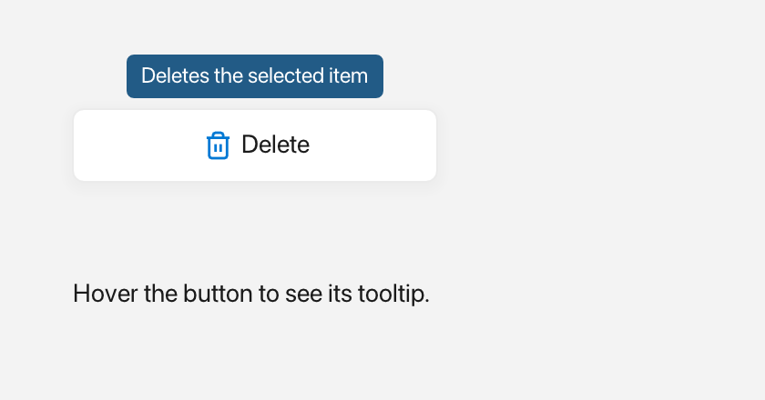

Tooltip
A Tooltip is a small popup bubble that appears when the user hovers over a
widget and hides itself after a short delay.

A tooltip above the button that owns it.
What it's for
Use a Tooltip to explain a control or show a short hint without using
permanent space in the window. It is perfect for icon buttons and compact
toolbars where a full label would not fit.
The bubble is rounded and appears near the widget the user is hovering. It
supports plain text or rich Inline content with icons and colors. A tooltip
appears after about half a second of hovering and fades away after a couple of
seconds. Moving the pointer away only stops it from appearing again; a bubble
that is already visible finishes its own timer.
An Inline is rich text built from plain text, an icon from Icons::*, and a
Color.
A first example
A window is the operating-system window your app draws into. Window::open
creates it, and if (!win) stops the program if the window could not be opened.
win.add<T>(...) creates a widget inside that window and returns a
reference to it. Rect{x, y, width, height} places the widget.
#include <fluffy/fluffy.hpp>
int main() {
fluffy::Window win = fluffy::Window::open("Tooltip demo", 640, 400);
if (!win) return 1;
auto& btn = win.add<fluffy::Button>("Hover me");
btn.setBounds(fluffy::Rect{40, 40, 140, 40});
fluffy::setTooltip(&btn, "Hello!");
win.run();
}
setTooltip attaches a hover tooltip to a widget. It expects a pointer, so you
pass &btn; btn itself is a reference to the button. Hover over the button
and the bubble appears.
The snippets below assume win and btn from this example.
Common tasks
Use rich content
Pass an Inline instead of a plain string when you want an icon or colored
text:
fluffy::setTooltip(&btn, fluffy::Inline{} << fluffy::Icons::badge_info << " Tip");
Show a tooltip programmatically
fluffy::Tooltip::showFor(&btn, "Hello", win);
fluffy::Tooltip::showFor(&btn, fluffy::Inline{} << fluffy::Icons::heart << " Hi", win);
Call showFor when you want to show the bubble without waiting for hover. The
two overloads mirror the text forms: one takes a plain string and one takes an
Inline. Like setTooltip, showFor expects a pointer to the widget that the
bubble should follow.
Create and update a tooltip widget
Most of the time setTooltip is all you need. If you want to manage a tooltip
yourself, create one like any other widget and update its content:
auto& tip = win.add<fluffy::Tooltip>(fluffy::Rect{0, 0, 120, 22}, "text");
tip.setText("new text");
tip.setInline(fluffy::Inline{} << fluffy::Icons::star << " Star");
setText replaces the rich content with plain text. setInline rebuilds the
plain text from the Inline text runs.
Size the bubble
naturalWidth and naturalHeight measure the content so the bubble can be
sized correctly.
Good to know
- There are no
text()orinline()getters. - The auto-hide delay is fixed at about 2.5 seconds, and the bubble height is 24 logical pixels.
- There are no events. While the window runs, Fluffy checks hovered widgets about every half second and shows the attached tooltip when one is found.
- A
Tooltip:entry in YAML creates an empty tooltip with only the base widget properties. Hover text is still attached in code withsetTooltip.
Quick reference
Properties
| Property | Type | Description |
|---|---|---|
text |
string |
Plain bubble text. setText overwrites the rich content. |
inline |
Inline |
Rich bubble (Color + Icons::*). setInline rebuilds the plain text from its Text runs. |
Two constructors (Tooltip(Rect, string) / Tooltip(Rect, Inline)) and two showFor overloads (same shapes). There are no text() / inline() getters; the auto-hide delay is fixed at 2.5s and the height at 24.0f.
Methods
fluffy::setTooltip(&btn, "Hello!");
fluffy::setTooltip(&btn, fluffy::Inline{} << fluffy::Icons::badge_info << " Tip");
fluffy::Tooltip::showFor(&btn, "Hello", win);
fluffy::Tooltip::showFor(&btn, fluffy::Inline{} << fluffy::Icons::heart << " Hi", win);
auto& tip = win.add<fluffy::Tooltip>(fluffy::Rect{0, 0, 120, 22}, "text");
tip.setText("new text");
tip.setInline(fluffy::Inline{} << fluffy::Icons::star << " Star");
naturalWidth / naturalHeight measure Inline runs for correct bubble size.
Events
None. While the window runs, Fluffy checks hovered widgets about every half second and shows the attached tooltip when one is found.